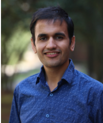
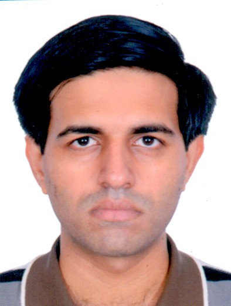
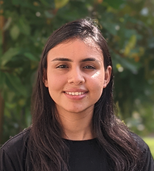
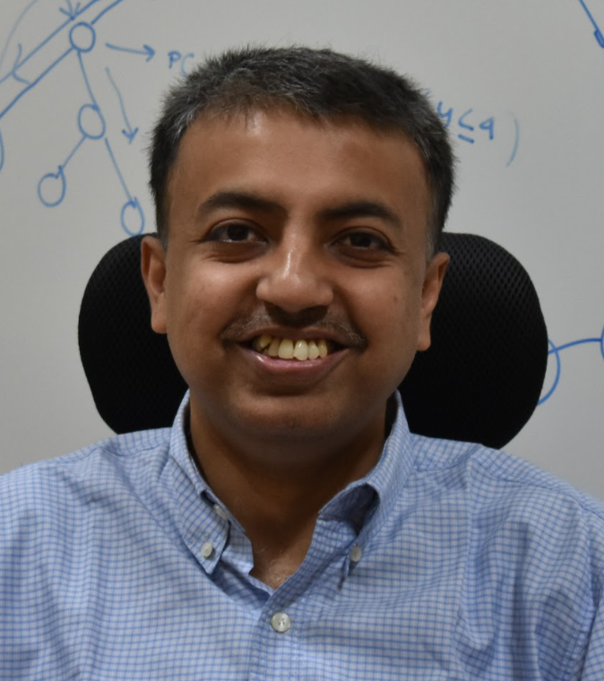

Automated Synthesis: Towards the Holy Grail of AI
Kuldeep S. Meel, Supratik Chakraborty, S. Akshay, Priyanka Golia, Subhajit Roy
A version of this tutorial was also presented at AAAI 2022.
description
Functional synthesis is the problem of synthesizing outputs as functions of inputs, while satisfying a declarative relational specification between inputs and outputs. The tutorial overviews recent approaches that combine advances in automated reasoning, knowledge compilation, and machine learning to solve a wide variety of practical functional synthesis problems. Given the fundamental importance of synthesis in computer science, recent developments in this area have been reported in several fora besides those pertaining to core AI.
The tutorial is designed around three emerging research directions for synthesis:
- Knowledge Compilation-Based Approaches: Motivated by the success of knowledge compilation approaches in Bayesian inference; these approaches focus on compiling a specification into a representation language from which derivation of the desired programs/functions is tractable.
- Counterexample-Guided Techniques: These approaches involve an intelligent initial "guess” of the desired system, followed by using an efficient solver to check if the guess satisfies the user’s requirements and incrementally repairs the system if it does not. This approach has been remarkably successful in different synthesis settings.
- Data-Driven Synthesis: These approaches focus on utilizing recent advances in constrained sampling to generate data (or examples), which is then fed to machine learning techniques to generate initial candidate functions. Subsequently, advances in unsatisfiable core calculation and analysis are used to repair the generated functions/programs, if necessary.
presenters
 Kuldeep S. Meel
Meel is an Presidential Young Professor of Computer Science in the School of Computing at the National University of Singapore (NUS). His research interests lie at the intersection of Artificial Intelligence and Formal Methods. He is the recipient of the 2019 NRF Fellowship for AI. He was named “AI’s 10 to Watch” by IEEE Intelligent Systems. His work received 2018 Ralph Budd Award for Best Ph.D. Thesis in Engineering, 2014 Outstanding Masters Thesis Award from Vienna Center of Logic and Algorithms, and Best Student Paper Award at CP 2015. His CP 2013 was selected as one of the 25 papers across 25 years for the 25th-anniversary volume of CP conference. He has presented tutorials at AAAI 2020, IJCAI 2020, IJCAI 2018, AAAI 2017, and UAI 2016.
Chakraborty is Bajaj Group Chair Professor of Computer Science and Engineering at Indian Institute of Technology Bombay, India. His research interests are primarily in symbolic reasoning, counting and sampling techniques, with applications to synthesis, verification and learning tasks. His paper with Meel and Vardi in CP 2013 was recently recognized as one of the top 25 papers in 25 years of CP. He has authored/co-authored three book chapters and has published extensively in both formal methods and artificial intelligence conferences. He has presented several tutorials including at UAI 2016, AAAI 2017 and IJCAI 2018. He is a Fellow of the Indian National Academy of Engineering.
 S. Akshay
Akshay is an Associate Professor in the Department of Computer Science and Engineering at Indian Institute of Technology Bombay. His research interests span formal methods and AI with a focus on quantitative verification and automated synthesis. He has been working on automated functional synthesis since 2015 and this has resulted in several conference/journal publications, including an upcoming book chapter.
 Priyanka Golia
Golia is a fifth year PhD student at Indian Institute of Technology Kanpur and National University of Singapore, advised by Prof. Kuldeep S. Meel and Prof. Subhajit Roy. Her research interest lies in the area of Boolean Functional Synthesis, Constraint Solving and Sampling, and Knowledge Compilation. She is the lead designer of the state-of-the-art functional synthesis engine, Manthan.
 Subhajit Roy